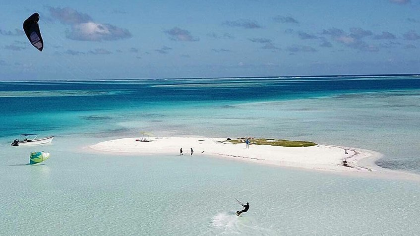

Los Roques
Los Roques ofrece las playas más paradisíacas del Caribe, de aguas turquesa y arena blanca y con una diversidad marina increíble, ideales para viajar y practicar el buceo. Además de su belleza, el Parque Nacional Los Roques es un archipiélago de numerosas islas y es considerado el parque marino más grande del Caribe con arrecifes de coral casi vírgenes y un mar tranquilo y cálido, lo que lo hacen sin duda un excelente destino que visitar en Venezuela.
